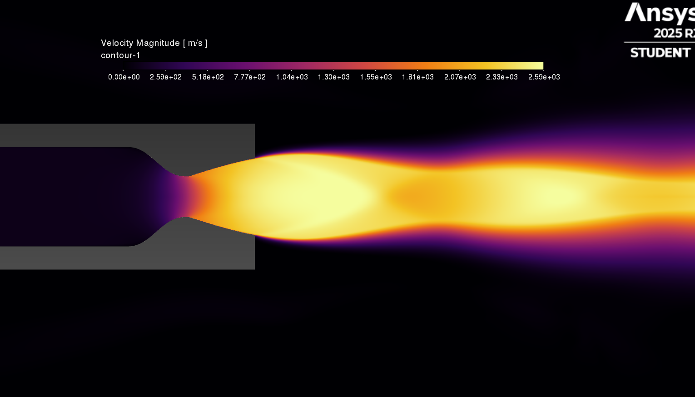
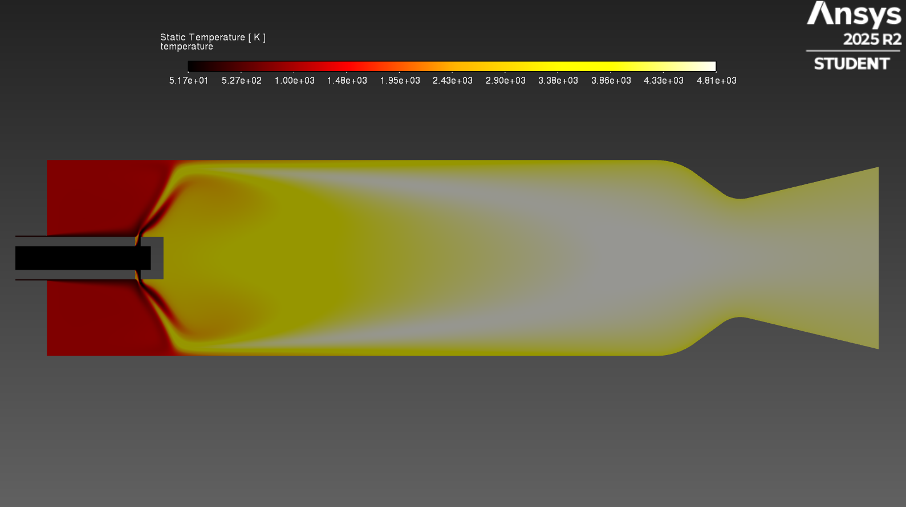
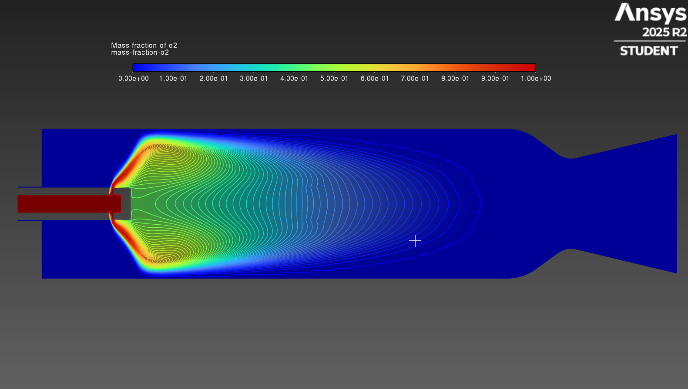
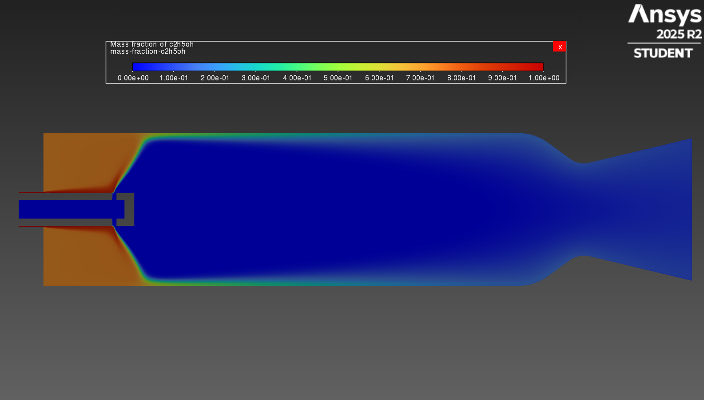
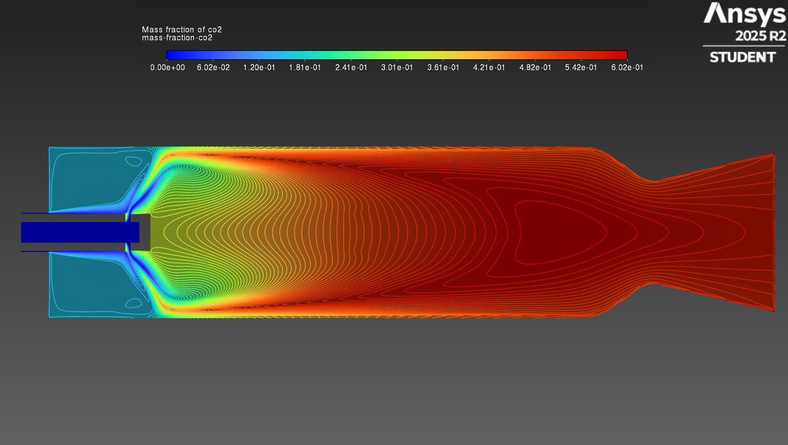
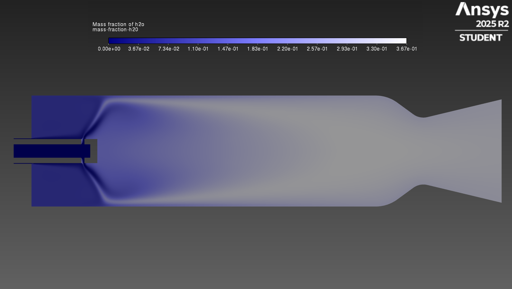
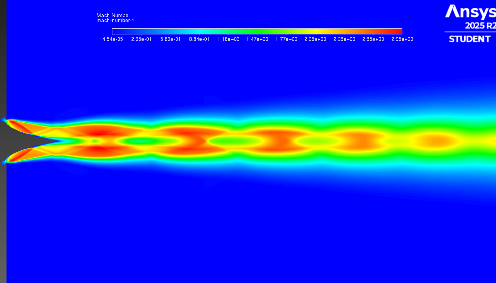
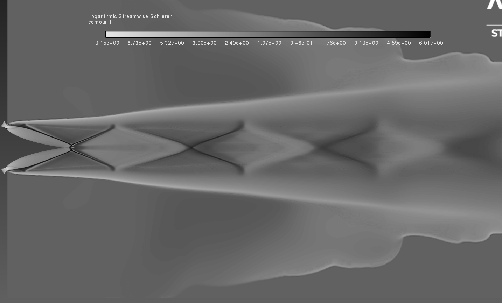
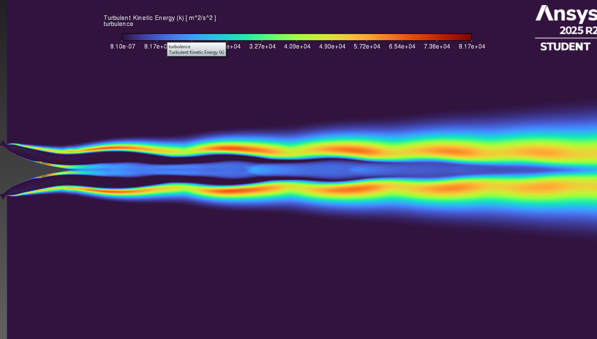

ANSYS Fluent • Propulsion CFD • Reactive Flow
Propulsion-focused CFD studies spanning BOREALIS LOX/RP-1 reacting-flow validation, GOX/ethanol pintle-injector analysis, and compressible aerospike exhaust-plume behavior.
CFD Portfolio
Each study is presented with its physical objective, numerical setup, result visualizations, and current verification status. Quantitative comparisons are separated from exploratory flow-physics results.

Mach-number contour from the BOREALIS LOX/RP-1 reacting-flow simulation.
This case evaluates the BOREALIS regeneratively cooled engine at its calibrated design point. The CFD model uses Species Transport with reacting flow, gaseous RP-1, a non-Sutherland ideal-gas mixing law, the k-ω turbulence model, and second-order upwind spatial discretization.
The chamber conditions were calibrated to 2.10 MPa and 3020 K, then the nozzle solution was compared against the isentropic and preliminary engine-sizing results.
| Quantity | Isentropic / design calculation | CFD result | Percent error |
|---|---|---|---|
| Chamber pressure, P0 | 2.10 MPa | 2.10 MPa | 0.00% |
| Chamber temperature, Tc | 3020 K | 3020 K | 0.00% |
| Exhaust velocity, Ve | 2470.68 m/s | 2364.19 m/s | 4.31% |
| Exit Mach number, Me | 2.566 | 2.505 | 2.36% |
| Total mass flow, ṁ | 1.500 kg/s | 1.567 kg/s | 4.47% |
| Exhaust temperature, Te | 1823.07 K | 1677.22 K | 8.00% |
| Thrust, F | 3691.45 N | 3728.37 N | 1.00% |
| Exit pressure, Pe | 101190.39 Pa | 106249.91 Pa | 5.00% |
The pintle-injector case was developed to examine the interaction between the gaseous-oxygen and ethanol streams, verify the emerging spray angle, and resolve the recirculation structure downstream of the pintle tip.
The reacting-flow setup uses Species Transport with volumetric reactions enabled, the energy equation enabled, and a k-ε turbulence model. Second-order discretization is used for the transported flow and species quantities to reduce numerical diffusion through the developing shear layers.





This study examines the external expansion of an aerospike exhaust plume using Mach number, logarithmic Schlieren, and turbulent kinetic-energy visualizations.
Together, the fields show the repeating shock-cell structure, plume-boundary growth, compression and expansion waves, and the development of the downstream shear layers.


